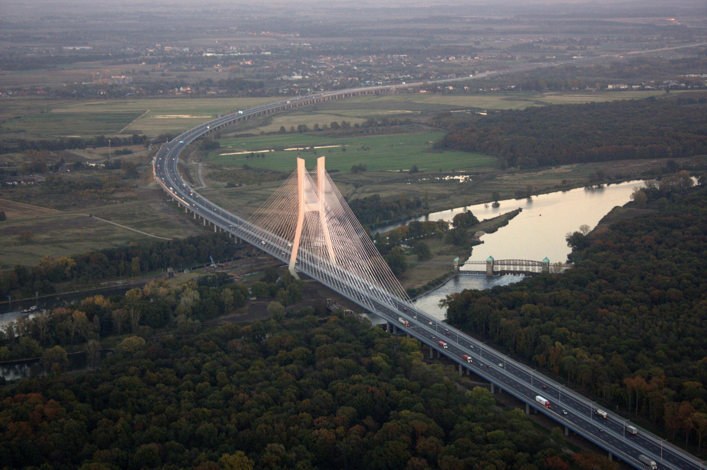
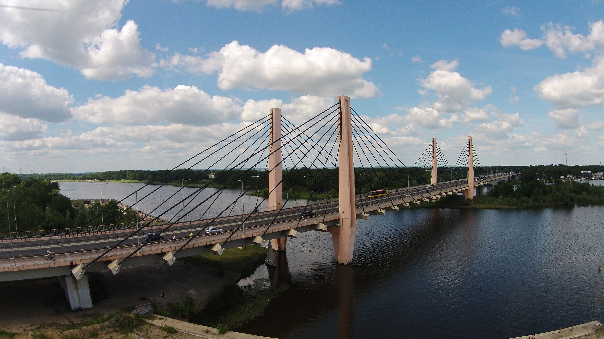
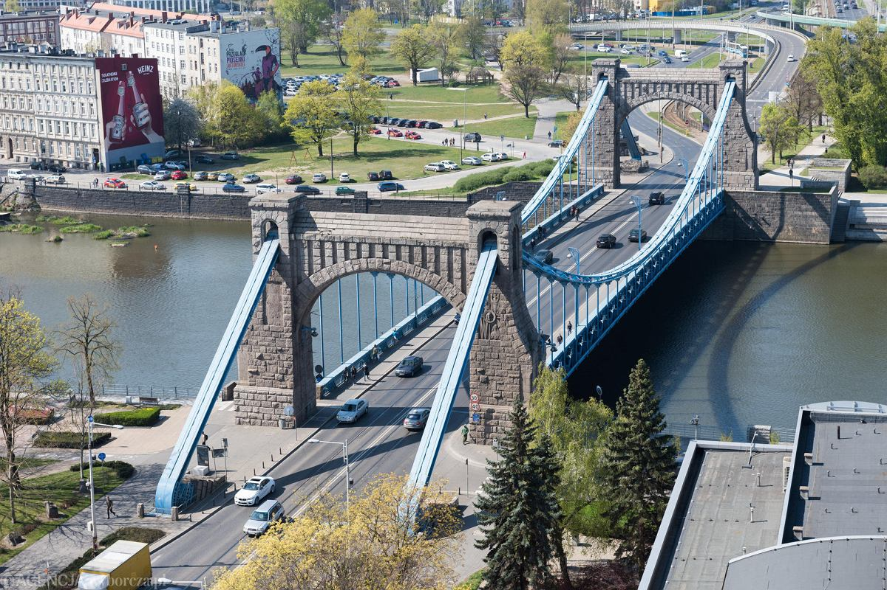
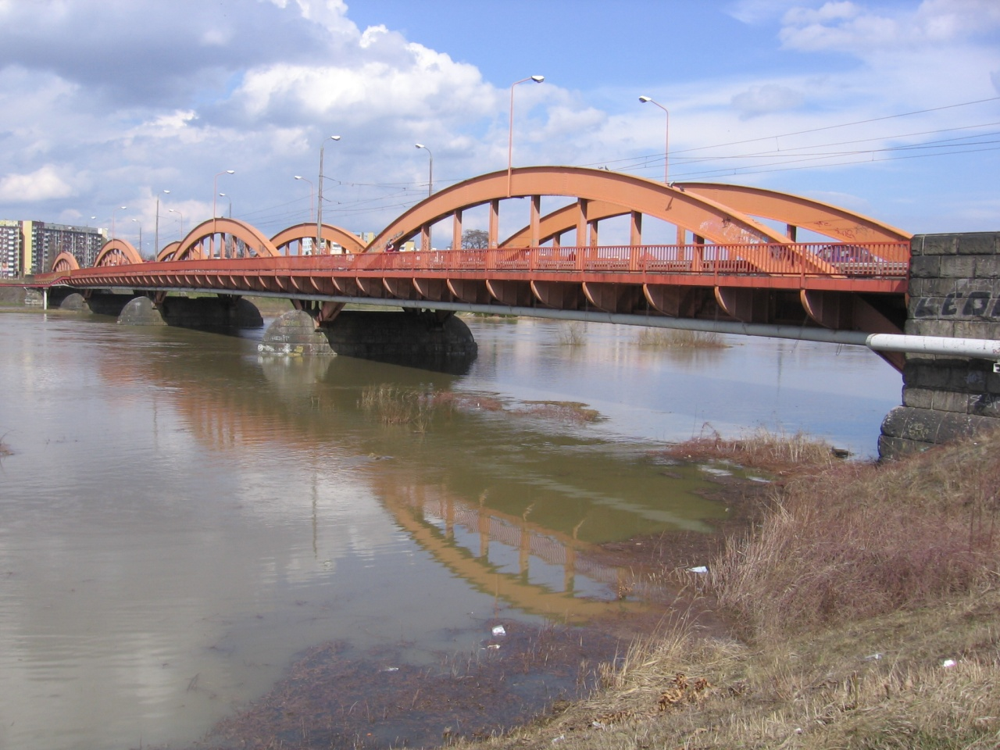
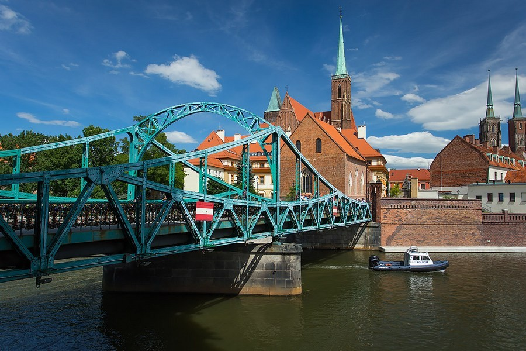

Ile mostów kryje Wrocław? Szacuje się, że około 100, nie licząc niewielkich kładek. Jeszcze przed II wojną światową było ich ponoć około 300! Nie ma wątpliwości – pod względem liczby mostów Wrocław prowadzi w Polsce, a w skali europejskiej plasuje się w ścisłej czołówce. Najbardziej imponującym jest Most Rędziński – monumentalny, żelbetonowy wiadukt nad Odrą, wznoszący się na ponad 120 metrów wysokości. To najwyższa tego typu konstrukcja w Polsce, która zachwyca zarówno kierowców, jak i miłośników architektury.
| Nazwa Mostu | Długość (m) | Rok otwarcia | Typ konstrukcji | Materiał | |||||
|---|---|---|---|---|---|---|---|---|---|
| Stal | Beton | ||||||||
| Most Tumski | ~52 | 1889 | Kratownicowy |
|
|||||
| Most Rędziński | 1742 (całkowita) | 2011 | Podwieszany (wantowy) |
|
|||||
| Most Milenijny | ~924 (całkowita) | 2004 | Podwieszany (wantowy) |
|
|||||
| Most Grunwaldzki | ~112 | 1910 | Wiszący |
|
|||||
| Mosty Trzebnickie | Różne | Różne | Różne typy |
|
|||||
Most Rędziński stanowi fragment Autostradowej Obwodnicy Wrocławia. Budowę zakończono w sierpniu 2011 roku, a głównym konstruktorem przeprawy jest prof. Jan Biliszczuk. To rekordzista w wielu kategoriach: długość samego mostu wynosi 612 metrów, a wraz z estakadami dojazdowymi aż 1742 metry, co czyni go największą przeprawą w Polsce.

Most Milenijny jest częścią śródmiejskiej obwodnicy Wrocławia, łącząc osiedla Popowice i Osobowice. Budowa zakończyła się w 2004 roku. Autorem projektu jest Piotr Wanecki, a głównym projektantem – Marek Jagiełło. Długość mostu wynosi 553,2 m, a wraz z wiaduktami 923,5 m. Jest to konstrukcja wantowa, podparta na dwóch pylonach w kształcie litery H.

Most Grunwaldzki to najprawdopodobniej najbardziej znana przeprawa we Wrocławiu. Jest to jednoprzęsłowy most wiszący o 18 m szerokości i 112,5 m długości. Zbudowany w latach 1908-1910 według projektu Richarda Plüddemanna. Początkowo nosił nazwę Most Cesarski, po I wojnie światowej przemianowano go na Most Wolności, by kilkanaście lat później wrócić do pierwotnej nazwy.

Mosty Trzebnickie to zespół dwóch mostów przerzuconych przez Starą Odrę, Kanał Różanka i Kanał Miejski.
Mosty łączą dzielnice Kleczków z Różanką i Karłowicami, pełniąc ważną funkcję komunikacyjną i historyczną.

Most Tumski, zwany także Mostem Katedralnym, powstał w 1889 roku w miejscu wcześniejszej drewnianej przeprawy. Jest to konstrukcja dwuprzęsłowa, łącząca Wyspę Piasek i Ostrów Tumski, czyli najstarszą, zabytkową część Wrocławia. Most Tumski pełni funkcję komunikacyjną, a także turystyczną – jest chętnie fotografowany przez mieszkańców i turystów.

Źródło: travelpolska.pl
Most Tumski słynie z tradycji zawieszania kłódek przez zakochane pary. Według legend, para, która przypnie kłódkę na moście, pozostanie razem na zawsze.
Jedna z lokalnych opowieści mówi, że Most Grunwaldzki wzniesiono w miejscu dawnego mostu, który zawalił się do Odry podczas gwałtownej burzy. Podczas budowy nowej konstrukcji robotnicy mieli natrafić na tajemnicze znaki sugerujące istnienie podziemnych przejść i ukrytych skarbów.
Mosty Trzebnickie tworzą zespół dwóch mostów: